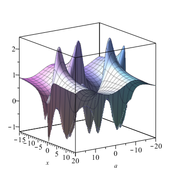

This repository contains material for a course that introduces SymPy in parallel with revising and extending the students' knowledge of calculus. There are some nonstandard choices of mathematical content and approach motivated by the availability of SymPy. Most of the content is in the tutorial and lab problems and their solutions.| Lab 01: .ipynb .html | Lab 02: .ipynb .html | Lab 03: .ipynb .html | Lab 04: .ipynb .html |
| Lab 05: .ipynb .html | Lab 06: .ipynb .html | Lab 07: .ipynb .html | Lab 08: .ipynb .html |
| Lab 09: .ipynb .html | Lab 10: .ipynb .html | Lab 11: .ipynb .html |